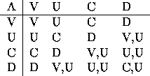
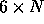

| Cowculations |
A primitive cow culture was discovered by noted anthropologist Dr. Bo Vine. Hundreds of computation tablets were unearthed in a pasture somewhere near Dallas. Dr. Vine managed to decipher the mystery of the tablets when he realized they represented mathematical calculations. He says ``I've always suspected that cows are smarter than they lead us to believe and here's the proof. The big breakthrough was realizing that they are not able to do math by cownting on their fingers, but they are able to think on their feet. But now I have hundreds of these tablets and I need help in verifying my hypothesis."
Write a program that helps Dr. Vine verify his hypothesis. This problem statement describes how he thinks the tablets should be interpreted. Each tablet contains six lines and each line contains a sequence of cow symbols. The first two lines represent cow numbers, the next three represent operations on those numbers and the sixth represents the result. Cow numbers make use of four symbols: V U C and D most closely represent the marks made by the cow hooves, so we will use them to represent the symbols. The numbers on the first two lines of a tablet are always a sequence of 5 of these symbols, and the number on the sixth line of a tablet is always a sequence of 8 of these symbols.
To interpret the cow calculations one must keep track of two numbers, hereafter referred to as Num1 and Num2. Originally Num1 is equal to the number on line 1 of a tablet and Num2 is equal to the number on line 2 of a tablet. However the value of Num2 can change as a result of the operations. There are four possible operations, represented by the symbols A, R, L, and N.
Operation A causes Num2 to become the ``sum" of Num1 and Num2, using this addition table:

The first symbol in a result box represents the result of the addition. The second symbol in a box represents a carry symbol.
For example: U A V = U and C A C = V with a carry of U
Examples of cow addition are:
VUCDV A VUCDV = VDUCV
DVVCU A CVUCU = UUVCVC
Operation R causes Num2 to have its symbols shifted right one position, with the rightmost symbol being lost and a V being placed into the leftmost position. For example VVCDU would become VVVCD. Operation L causes Num2 to have its symbols shifted left one position, with the leftmost symbol being kept and a V placed into the rightmost position. For example VVCDU would become VVCDUV. N is the null operation. It has no effect on Num2.
After the operations have been performed on Num1 and Num2 the final value of Num2 is hopefully the value marked on the sixth line of the tablet. If the final value of Num2 does not make use of 8 symbols then it is padded with V's on the left (VDCCC becomes VVVVDCCC).
Dr. Vine says ``I have already verified that all the tablets conform to the hypothesis in terms of the format of the tablets, number of lines and symbols, types of symbols, etc. But I need to verify that the result of the mathematical operation described on lines 1 through 5 is indeed on line 6."
The first line contains an integer N between 1 and 10 describing how many tablets are represented. The next  lines represent the N tablets as described in the problem statement.
There should be N+2 lines of output. The first line of output should read COWCULATIONS OUTPUT. There will then be one line of output for each tablet that states either YES (the tablet follows Dr. Vine's hypothesis) or NO (the tablet does not follow Dr. Vine's hypothesis). The final line of output should read END OF OUTPUT.
5 VVVVU VVVVU A A A VVVVVVUV VVCCV VVDCC L R A VVVVUCVC VVCCV VVDCC R L A VVVVUCVV VVUUU VVVVU A N N VVVVVUCU DDDDD VVVVU A L L UVVVVVVV
COWCULATIONS OUTPUT YES YES YES NO YES END OF OUTPUT